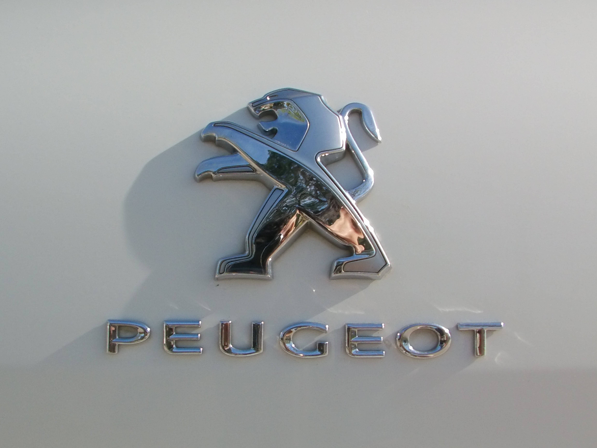

بيجو (Peugeot) :
بيجو هي علامة تجارية كبرى لشركة سيارات فرنسية، تعتبر ثاني أكبر شركة تصنع السيارات في أوروبا بعد فولكس واجن. تعود أصول الشركة إلى 1842 حيث كانت تصنع مطاحن الفلفل والملح والبن، ثم الدراجات في نهاية القرن 19. المقر العالمي في باريس بالقرب من محطة المترو Porte Maillot وفندق كونكورد لافيت سابقاً "حياه ريجنسي حالياً، وتأتي الشركة أصلا من سوشو، فرنسا حيث تمتلك شركة بيجو مصنع كبير هناك بجانب متحف بيجو. كما ترعى الشركة فريق سوشو لكرة القدم الذي أُوسس في عام 1928 من قبل إحدى أفراد عائلة بيجو، وشعار الفريق هو نفس شعار الأسد كشعار الشركة.
| التأسيس : | 10 يوليو 1810 |
| المؤسس : | Armand Peugeot |
| الشركة الأم : | Stellantis |
| عدد الموظفون : | 208٬780 (2019) |
| المدير التنفيذي : | Linda Jackson |
تاريخ بيجو :
دأت عائلة Peugeot في Valentigney ، Montbéliard ، Franche-Comté ، فرنسا في مجال التصنيع في القرن التاسع عشر. في عام 1842 ، أضافوا إنتاج مطاحن القهوة والفلفل والملح. كان دخول الشركة إلى سوق السيارات عن طريق فساتين قماش قطنية ، والتي تستخدم قضبان الصلب ، مما يؤدي إلى إطارات المظلات ، وشفرات المنشار ، والأزاميل ، والعجلات السلكية ، والدراجات. قدم أرماند بيجو سيارته " Le Grand Bi " بنس فارثينج في عام 1882 ، إلى جانب مجموعة من الدراجات الأخرى. يرمز شعار الشركة ، الذي كان في البداية أسدًا يمشي على سهم ، إلى سرعة وقوة ومرونة شفرات منشار بيجو. انفصلت شركة السيارات وشركة الدراجات في عام 1926 ولكن استمر تصنيع دراجات بيجو حتى وقت قريب جدًا. أصبح Armand Peugeot مهتمًا بالسيارات في وقت مبكر ، وبعد الاجتماع مع Gottlieb Daimler وآخرين ، كان مقتنعًا بقدرتها على البقاء. تم إنتاج أول سيارة بيجو ، وهي سيارة بثلاث عجلات تعمل بالبخار من تصميم ليون سيربوليت ، في عام 1889 ؛ تم تقديم أربعة أمثلة فقط. كانت قوة البخار ثقيلة وضخمة وتتطلب أوقات إحماء طويلة. في عام 1890 ، بعد لقاء دايملر وإميل ليفاسور ، تم التخلي عن البخار لصالح سيارة ذات أربع عجلات بمحرك احتراق داخلي يعمل بالبنزين من صنع بانهاردتحت رخصة دايملر. كانت السيارة أكثر تطوراً من العديد من معاصريها ، مع نظام تعليق ثلاثي النقاط وناقل حركة منزلق. تم بيع مثال للشاب البرتو سانتوس دومون ، الذي قام بتصديره إلى البرازيل. تبع ذلك المزيد من السيارات ، 29 منها تم بناؤها في 1892 ، 40 في 1894 ، 72 في 1895 ، 156 في 1898 ، و 300 في 1899. أعطيت هذه النماذج المبكرة أرقام "النوع". أصبحت بيجو أول مصنع يلائم الإطارات المطاطية (الصلبة ، بدلاً من الإطارات الهوائية ) لسيارة تعمل بالبنزين
كانت بيجو من أوائل الرواد في سباقات السيارات ، حيث فاز ألبرت لوميت بأول سباق للسيارات في العالم ، باريس روان ، بسيارة بيجو 3 حصان. تأهلت خمس سيارات بيجو للحدث الرئيسي وانتهت جميعها. أنهى Lemaître 3 دقائق و 30 ثانية خلف Comte de Dion التي كانت سيارتها البخارية غير مؤهلة للمنافسة الرسمية. تم إدخالها ثلاثة بيجو في باريس بوردو وباريس ، حيث تعرضوا للضرب من قبل سيارة بنهارد في (على الرغم بمتوسط سرعة 20.8 كم / ساعة (12.9 ميل في الساعة) وأخذ الجائزة 31،500 فرنك. شهد هذا أيضًا الظهور الأول لإطارات ميشلان الهوائية في السباقات ، أيضا على بيجو. ثبت أنها غير دائمة بما فيه الكفاية. ومع ذلك ، كانت المركبات لا تزال في شكل عربات بلا أحصنة بشكل كبير وكان يقودها الحارث .
في عام 1896 ، تم بناء أول محركات بيجو ؛ لم يعودوا يعتمدون على دايملر. تم تصميم المحرك الأول بواسطة Rigoulot ، وكان المحرك الأول بقوة 8 حصان (6.0 كيلوواط) تم تركيبه في الجزء الخلفي من النوع 15 . كما أنها كانت بمثابة الأساس لنسخة شبه دقيقة أنتجها روشيت شنايدر . تبع ذلك مزيد من التحسينات: انتقل المحرك إلى الأمام على طراز 48 وسرعان ما أصبح تحت غطاء محرك السيارة في مقدمة السيارة ، بدلاً من إخفائه تحتها ؛ تم اعتماد عجلة القيادة على النوع 36 ؛ وبدأوا في الظهور مثل السيارة الحديثة. أيضًا في عام 1896 ، انفصل Armand Peugeot عن Les Fils de Peugeot Frères ليؤسس شركته الخاصة ، Société Anonyme des Automobiles Peugeot ، لبناء مصنع جديد في Audincourt للتركيز بالكامل على السيارات. في عام 1899 ، بلغت المبيعات 300 ؛ بلغ إجمالي مبيعات السيارات لفرنسا في ذلك العام 1200. في نفس العام ، فاز Lemaître بسباق نيس كاستيلان نيس في سباق خاص 5،850 سم مكعب (357 بوصة مكعبة) 20 حصان (14.9 كيلوواط). في صالون باريس عام 1901 ، طرحت بيجو لأول مرة محركًا صغيرًا يعمل بعمود 652 سم مكعب (40 قدم مكعب) 5 حصان (3.7 كيلو واط) أسطوانة واحدة ، أطلق عليها اسم " Bébé " ("الطفل") ، وألقت صورتها المحافظة ، لتصبح رائدة في الأسلوب . بعد احتلاله المركز التاسع عشر في رالي باريس-فيينا 1902 بقوة 50 حصان (37.3 كيلو واط) 11322 سم مكعب (691 متر مكعب) ، وفشل في إنهاء السباق بسيارتين متشابهتين ، توقفت بيجو عن السباق. في عام 1898 ، قدمت Peugeot Motocycles في معرض Paris Motorshow أول دراجة نارية مزودة بمحرك Dion-Bouton. تظل Peugeot Motocycles أقدم مصنع للدراجات النارية في العالم. أضافت بيجو دراجات نارية إلى مجموعتها عام 1901 ، ومنذ ذلك الحين تم بناؤها تحت اسم بيجو. بحلول عام 1903 ، أنتجت بيجو نصف السيارات التي صنعت في فرنسا ، وقدمت 5 حصان (4 كيلوواط) Bébé ، وأربعة مقاعد 6.5 حصان (4.8 كيلو واط) ، و 8 حصان (6.0 كيلو واط) و 12 حصان (8.9 كيلو واط) ) تشبه طرازات مرسيدس المعاصرة .
أظهر صالون 1907 أول ست أسطوانات من بيجو ، وتميزت بانضمام توني هوبر كمنشئ محرك. [25] بحلول عام 1910 ، تضمن خط إنتاج بيجو 1149 سم مكعب (70 قدم مكعب) من أسطوانتين وستة أربع أسطوانات ، من بين 2 إلى 6 لترات. بالإضافة إلى ذلك ، تم افتتاح مصنع جديد في نفس العام في سوشو ، والتي أصبحت المصنع الرئيسي في عام 1928. اسم أكثر شهرة، إتوري بوغاتي ، تصميم جديد 850 سم مكعب (52 متر مكعب في) أربع أسطوانات بيبي من عام 1912. وفي العام نفسه، عاد بيجو لسباقات مع فريق من ثلاثة مهندسين سائق (سلالة نموذجية من فترة رائدة ، مثلها إنزو فيراري من بين آخرين): جول جو (خريج الفنون والميتير ، باريس) ، باولو زوكاريلي (سابقًا من هيسبانو-سويزا ) ، وجورج بويلو (يُطلق عليهم معًا لي شارلاتان ) ، مع سويسري يبلغ من العمر 26 عامًا المهندس إرنست هنري لجعل أفكارهم حقيقة. قررت الشركة voituretteلم يكن سباق (السيارة الخفيفة) كافياً ، واختار تجربة grandes épreuves (جولة كبيرة). لقد فعلوا ذلك من خلال جولة هندسية بقوة : عمود كامات علوي مزدوج (DOHC) بأربع أسطوانات سعة 7.6 لتر (110 × 200 مم) مع أربعة صمامات لكل أسطوانة.أثبتت أنها أسرع من السيارات الأخرى في ذلك الوقت ، وفاز Boillot بسباق الجائزة الكبرى الفرنسي عام 1912 بمتوسط 68.45 ميل في الساعة (110.2 كم / ساعة) ، على الرغم من فقدانه للعتاد الثالث والتوقف لمدة 20 دقيقة. في مايو 1913 ، استولى جو على إنديانابوليس ، وفاز بمتوسط 75.92 ميل في الساعة (122.2 كم / ساعة) ، مسجلاً سرعات مستقيمة 93.5 ميل في الساعة (150.5 كم / ساعة).جعل بيجو أول شركة سيارات غير أمريكية تفوز في سباق إنديانابوليس موتور سبيدواي. في عام 1914 ، سجل طراز L5 سعة 3 لترات من Boillot رقمًا قياسيًا جديدًا في دورة إندي بلغ 99.5 ميل في الساعة (160.1 كم / ساعة) ، واحتلت Duray المرتبة الثانية (تم التغلب عليها من قبل بيجو السابق رينيه توماس في 6235 سم مكعب (380 متر مكعب في) Delage ). آخر (بقيادة شقيق بويو ، أندريه ) تم وضعه عام 1915 ؛ فازت نماذج مماثلة في عام 1916 ( داريو ريستا ) و 1919 ( هودي ويلكوكس ).
بالنسبة لسباق الجائزة الكبرى الفرنسي لعام 1913 ، تم إنتاج محرك L5 محسّن (بمحرك 5655 سم مكعب (345 متر مكعب)) باستخدام عمود مرفقي كروي رائد ، وأعمدة كامات تعمل بالتروس ، وتزييت الحوض الجاف ، والتي سرعان ما أصبحت قياسية في سيارات السباق ؛ قُتل زوكاريلي أثناء الاختبار على الطرق العامة ، لكن بويلو فاز بسهولة بالحدث ، مما جعله (وبيجو) أول فائز مزدوج في السباق. في سباق الجائزة الكبرى الفرنسي لعام 1914 ، تفوقت مرسيدس على بيجو ، وعلى الرغم من الابتكار الجديد ، فرامل العجلات الأربع (مقابل سيارة مرسيدس الخلفية فقط) ، أثبت جورج عدم قدرته على مضاهاة السيارة وتعطلت. (من المثير للدهشة أن موديل عام 1914 قام بالتدرب بسرعة 103 ميل في الساعة (165.8 كم / ساعة) في التدريب في إندي عام 1949 ، لكنه فشل في التأهل.) كانت بيجو أكثر حظًا في عام 1915 ، حيث فازت في سباق الجائزة الكبرى الفرنسي وكأس فاندربيلت . خلال الحرب العالمية الأولى ، تحولت بيجو إلى حد كبير إلى إنتاج الأسلحة ، وأصبحت شركة كبرى لتصنيع الأسلحة والمركبات العسكرية ، من السيارات المدرعة والدراجات إلى القذائف.